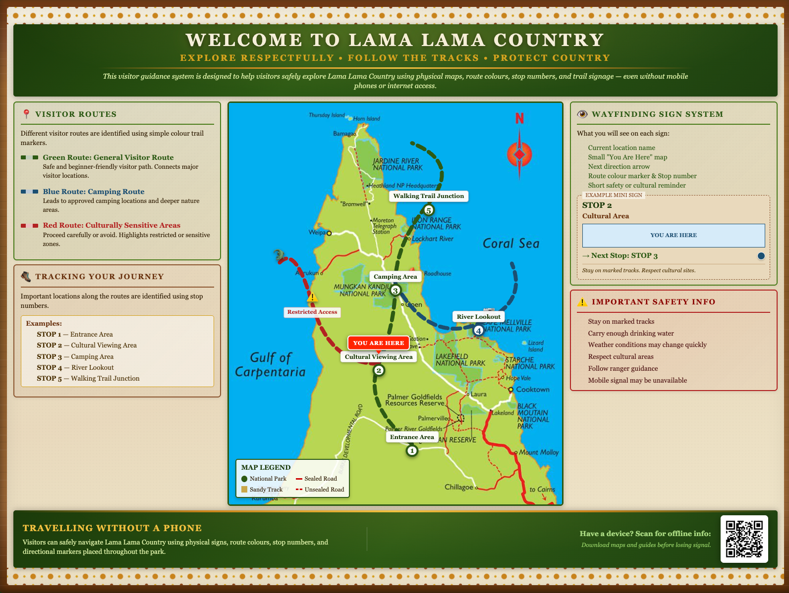

- Airtasker. https://www.airtasker.com
- Ateneo Innovation Center. (2020). Near Cloud / AIC EduCloud: Empowering disaster resiliency and education. Ateneo de Manila University. https://www.ateneo.edu/sose/aic/projects/near-cloud
- Australia Post. https://auspost.com.au
- Bunnings Australia. https://www.bunnings.com.au
- Engineers Without Borders Australia. (2019). Lama Lama water supply project. https://ewb.org.au/blog/2019/09/04/lama-lama-water-supply-project/
- Engineers Without Borders Australia. (2025). Lama Lama Country Visitor Management Design Brief. https://ewbchallenge.org/
- Engineers Without Borders Australia. (2026). EWB Australia partners with First Nations community for 2026 Challenge. https://ewb.org.au/blog/2026/02/09/announcements-first-nations-ewb-challenge-2026/
- Espiner, S., & Apse, M. (2023). The effectiveness of safety signs in outdoor recreation settings. Department of Conservation. https://www.doc.govt.nz/globalassets/documents/about-doc/role/land-safety-forum/effectiveness-of-safety-signs-in-outdoor-recreation-settings.pdf
- Google Developers. (2023). Service workers: An introduction. https://web.dev/learn/pwa/service-workers
- Jones, R., Thurber, K. A., Wright, A., Chapman, J., Donohoe, P., Davis, V., & Lovett, R. (2018). Associations between participation in a ranger program and health and wellbeing outcomes among Aboriginal and Torres Strait Islander people in Central Australia: A proof of concept study. International Journal of Environmental Research and Public Health, 15(7), 1478. https://doi.org/10.3390/ijerph15071478
- Lama Lama. (n.d.). Lama Lama Rangers. https://www.lamalama.org.au/lama-lama-rangers/
- Lama Lama. (n.d.). Visiting Lama Lama Country. https://www.lamalama.org.au/visiting/
- Parks Australia. (n.d.). Kakadu National Park visitor app. https://kakadu.gov.au/plan/plan-your-trip/download-official-app-your-essential-guide-visiting-kakadu/
- Queensland Government. (2024). Lama Lama National Park (CYPAL). https://parks.desi.qld.gov.au/parks/lama-lama
- Queensland Parks and Forests. (2025). Offline visitor guides and remote area best practice. https://parks.qld.gov.au/things-to-do/brochures
- Ram, A. (2022). Learn Limitless: Affordable offline digital learning solution. MIT Solve. https://solve.mit.edu/solutions/54983
- The Print Facility. https://theprintfacility.com.au
Appendix and reference list
Supporting visuals and sources
Prototype visuals, app UI testing material and reference sources are collected here so the main project pages stay focused.
Appendix
Prototype visuals
This is app UI prototype testing, not full system testing.
